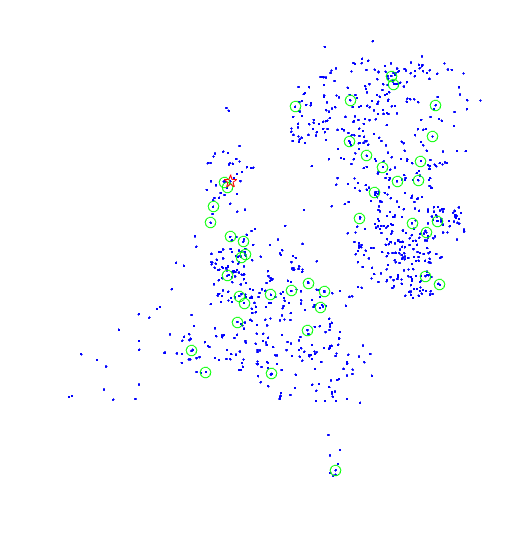
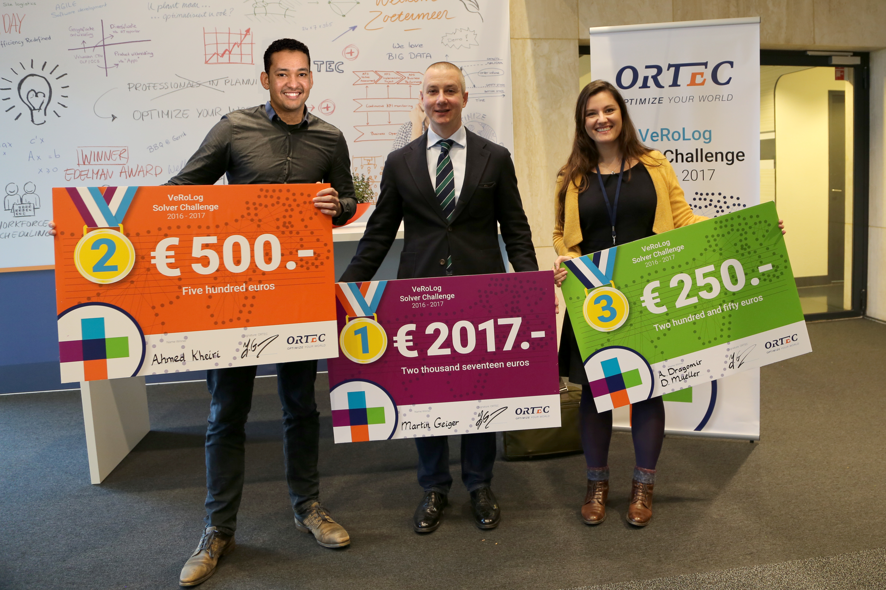
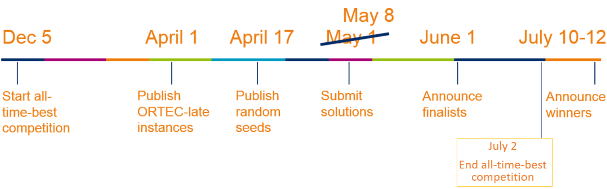

Welcome
Although this challenge has ended, we hope that the challenge will live on through this website. While after July 2nd 2017, no more all-time-best prizes are rewarded, it remains possible to submit new solutions to the all-time-best instances and improve your ranking.

ORTEC proudly announces (some of) the ranking of the VeRoLog solver challenge 2016-2017!
- 1st prize: Team mjg: Martin Josef Geiger from the University of the Federal Armed Forces Hamburg, Germany.
- 2nd prize: Team akhe: Ahmed Kheiri from Lancaster University, Lancaster, United Kingdom.
- 3rd prize: Team ADDM: Alina-Gabriela Dragomir from the University of Vienna, Vienna, Austria and David Mueller from Vienna University of Technology, Vienna, Austria.
- 4th place: Team SunBeams: Igor Kozin, Sergey Borue and Olena Kryvtsun from Zaporizhzhya National University, Ukraine.
- 5th place: Team Success: Morteza Keshtkaran from Shiraz University, Iran.
- 6th place: Team Tau17: Yael Arbel, Dafna Piotro, Alona Raucher and Tal Raviv from Tel Aviv University, Israel.
- 7th place: Team MLS: María Camila Ángel and Lucia Paris from Universidad de Los Andes, Colombia.

The finalists were invited to the ORTEC HQ in Zoetermeer (The Netherlands) on November 14th, 2017.
The organization congratulates the winners with this great result. Once again, we would like to thank all contestants for putting their valuable time and effort into this competition, thereby contributing to a great and challenging experience for everyone.
We have disclosed the ORTEC-hidden instances as well as their best known solutions so far.
Last but not least, the next VeRoLog solver challenge will also be organized by ORTEC. That challenge will run until the summer of 2019, when the next VeRoLog conference is held in Seville, Spain. For more information, visit verolog2019.ortec.com.

Welcome to the most challenging vehicle routing optimization competition! Hosted by VeRoLog – the Working Group on Vehicle Routing and Logistics Optimization (within EURO, the Association of the European Operational Research Societies), this year’s challenge officially started during the VeRoLog meeting in Nantes (June 2016). However, new participants are still encouraged to sign up, as this challenge does not end until July 2017 when the next VeRoLog meeting takes place in Amsterdam. The challenge is proposed, sponsored and ran by ORTEC.
The problem being addressed arises from practice and combines aspects from scheduling, routing and inventory. The main difficulty in this problem is that one needs to distribute equipment that is scarce. However, this equipment may be reused, i.e., it may be picked up at one customer and delivered to the next. The problem is defined over a period of several days, and is completely deterministic. In the format used for this challenge the realistic instances are simplified for the sake of clearness, but they preserve the essence of the difficulties.We are convinced that you will find this problem intriguing and challenging. We hope that your participation will contribute to an exciting challenge and may intensify the research on this problem which is still widely overlooked in the literature.
The ORTEC VeRoLog solver challenge team